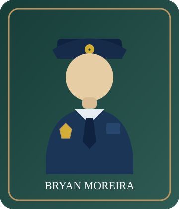

Bienvenidos a mi portafolio personal

Mi nombre es Bryan Enrique Moreira Intriago,
soy policía y estudiante de la carrera de
Sistemas Inteligentes en la Universidad ECOTEC.
Este portafolio forma parte de mis actividades
académicas en la asignatura Programación de
Sistemas Web, donde estoy aprendiendo a crear
páginas utilizando HTML y CSS.
Sobre mí
Soy Bryan Enrique Moreira Intriago,
estudiante de Sistemas Inteligentes en ECOTEC.
Además de mi actividad profesional como policía,
tengo interés en conocer nuevas herramientas
tecnológicas y aprender cómo funcionan
los sistemas informáticos.
Considero importante continuar preparándome
académicamente, ya que la tecnología ofrece
nuevas oportunidades para resolver problemas
y mejorar diferentes actividades profesionales.
Mi objetivo es fortalecer mis conocimientos
en programación, desarrollo web y sistemas
inteligentes, para aplicar lo aprendido
en mi formación personal y profesional.
Mis habilidades
Durante mi formación universitaria
estoy desarrollando habilidades
relacionadas con la tecnología,
la programación y el trabajo colaborativo.
- HTML: estructuración de páginas web.
- CSS: diseño y presentación de sitios web.
- GitHub: organización de proyectos.
- Resolución de problemas tecnológicos.
- Trabajo en equipo y responsabilidad.
Mis proyectos
En esta sección presento algunos de los
trabajos desarrollados durante mi formación
académica en la Universidad ECOTEC.
Mi primer portafolio personal
Este proyecto consiste en la creación
de una página web personal utilizando
HTML y CSS, con la finalidad de presentar
información sobre mi formación académica,
habilidades e intereses tecnológicos.
Durante su desarrollo he aprendido
a organizar el contenido de una página,
utilizar etiquetas HTML y registrar
los avances mediante GitHub.
Ver proyecto en GitHub